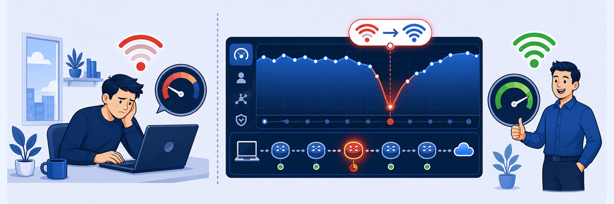

Lab 15: Troubleshoot Poor Wi-Fi
Scenario: As the Zscaler administrator, you are responsible for resolving a poor user experience reported by a specific employee. The user has had frequent disconnections, slow internet speeds and difficulty completing work tasks, which has hurt their productivity. Initial insights suggest that the issue may stem from poor Wi-Fi performance, but the details remain unclear. Using Zscaler Digital Experience (ZDX), your role is to analyze performance trends to pinpoint the root cause, troubleshoot the issue and restore the user's digital experience.
Objectives: By the end of this lab you will:
- Filter ZDX dashboards to isolate user-specific device and Wi-Fi performance data during the incident window.
- Use the ZDX Y-Engine Analyze Score feature to find the factors that contribute to ZDX score degradation.
- Compare Cloud Path data and diagnose a drop in ZDX score to pinpoint root causes.
- Analyze Device Events associated with ZDX score changes to find device events that affect user experience.
| User | Curtis Hardwick |
| Device | PC-Curtis-Wi-Fi |
| Time Range | Last 48 Hours |
| Highlights | Poor Wi-Fi Signal, SSID Changing, Y-Engine Comparison |

"My internet is slow" is the hardest ticket to close, because the problem could be anywhere from the laptop's radio to the SaaS data center. You'll collect evidence from four different angles before you conclude.
- Curtis's score swings between Good and Poor instead of being always bad. What does that on/off pattern hint at compared with a constantly poor score?
- The Y-Engine says Low Wi-Fi Signal, and the Hop View shows the latency on the first hop (device → local gateway). Why is that first-hop evidence so convincing, and what does it rule out?
- Device Events show the score drops when Curtis joins Columbus-OH-Office and recovers on Google_Nest. What would you actually do with that finding?
In this task, you will look up a user's ZDX score data for an application over the period they have been having issues.
1 Open User / Device Search for the affected user
- From the Experience Center, go to the Search option and type
User/Device Search(Analytics > Digital Experience Management > User / Device Search). - In the drop-down, select User Search.
- In the search box, type:
Curtis Hardwick - In the search results, click Curtis Hardwick to open the user page.
2 Reset any earlier filter
- You are taken to Curtis Hardwick's Users page.
- You need to Reset the filter you applied in Task 14.4 before viewing the user dashboard.
3 Filter by time range and application
- View the ZDX score for an application (e.g., Salesforce Lightning) for the period of the incident.
- Select the time period for the incident (e.g., 48 Hours).
- Select an application (Salesforce Lightning).
- View the ZDX Score Over Time graph.
- Notice that the ZDX score often fluctuates between Good and Poor.
Note: You may have to pick custom options from the reporting timeframe to see meaningful data.
In this task, you will zoom in on a period where the ZDX score is Poor, and use the Analyze Score capability of the ZDX Y-Engine to find the key factors behind the degraded score.
Note: Your results will differ from the screenshots in the lab guide. Traffic in the lab is simulated, so the exact values and indicators vary with the time range and sample you select. Feel free to repeat these steps with different Poor score points to explore several scenarios.
1 Zoom in on a poor score interval
- In the ZDX Score Over Time graph, find a time period where the ZDX Score is Poor and drag across it.
Note: For best results, make sure the selection includes time before and after the Poor score period.
2 Run the Y-Engine Analyze Score
- Click a point on the graph with a Poor score to set the cursor there.
- Look at the ZDX Score shown for that sample.
- Click Analyze Score. The analysis takes a few seconds.
- View the analysis results table titled The following factors might have impacted the ZDX score.
Note: In this example, the score of 10/100 most likely came from a Low Wi-Fi Signal, and the Suboptimal Wi-Fi hurt the user's performance after connecting to the 3Com_Wifi SSID.
In this task, you will compare a Poor ZDX score sample with the last known Good sample using the ZDX comparison tool.
1 Compare Poor vs last known Good
- Click Compare to for the selected point on the ZDX Score Over Time graph.
- Select Last known good score.
- Review the comparison panel that appears, focusing on the differences in:
- ZDX Score for the Analyzed Point vs the Comparison Point
- Wi-Fi identifier
- Client-Egress Latency
In this task, you will use the Cloud Path Hop View to pinpoint where high latency occurs along the path between the user's device and the application.
1 Return to the user report and select the application
- Select the Back option next to Compare ZDX Scores to return to the user report.
- Confirm you are still viewing the affected user: Curtis Hardwick.
- Select the application Salesforce Lightning.
2 Focus on a Poor interval and review Cloud Path latency
- In the ZDX Score Over Time graph, zoom in again on a time period where the ZDX Score is Poor.
- Scroll down to the Cloud Path graph and the latency values at the selected data point.
Note: Results vary, but you'll most likely see low latency at the start of the selected period, when the ZDX score was Good, changing to high latency when the score drops to Poor.
3 Examine the Hop View to find the problem hop
- Below the Cloud Path graph, find the Hop View visualization. It shows each detected hop between the client and the server for the selected application and sample, with the latency measured at each hop.
- Examine the hops and find the one contributing the most to end-to-end latency.
Note: If the network connection was lost, there is no data to report and the Hop View can't be displayed. Pick another point in time where the graph shows data.
Note: In this example, the Hop View isolates the slow end-to-end latency to the first hop, between the user's device and their local gateway.
In this task, you will examine User Device Events and correlate them with ZDX score changes.
1 Open the User Device Events timeline
- In the same user view and time window as the previous tasks, scroll down to the bottom of the page to find the User Device Events timelines.
2 Correlate device events with the Poor score transition
- In the Network timeline, find the point in time where the ZDX Score changed to Poor (based on the ZDX Score Over Time graph you analyzed earlier).
- Mouse over the dot on the Network timeline at that time. A pop-up shows the Network Interface data recorded for that sample.
- Review the details in the pop-up and scroll through the Network Interface fields. Find what changed at that time by looking at the New Value field.
Note: In this example, the SSID Change from Google_Nest to Columbus-OH-Office is associated with the Poor score transition.
3 Correlate device events with the recovery back to Good
- In the same Network timeline, find the dot that matches when the ZDX Score returned to Good.
- Mouse over that dot to view the Network Interface data for the recovery point.
Note: In the example scenario, switching back to the Google_Nest SSID is associated with a Good ZDX score, which shows the user's experience improved when they returned to the original Wi-Fi network.
4 Interpret the impact of device events
- Identify which Wi-Fi or network events (such as SSID changes, disconnects or signal changes) happened at the same time as the score degradation or recovery.
- Use this correlation to support your root-cause conclusion (e.g., “SSID changes and poor Wi-Fi signal on PC-Curtis-Wi-Fi caused the user's poor experience”).